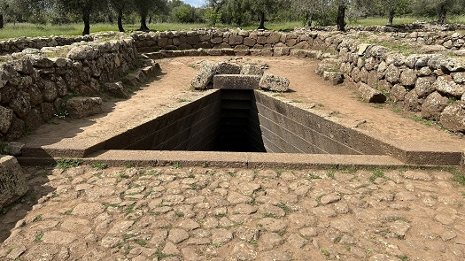
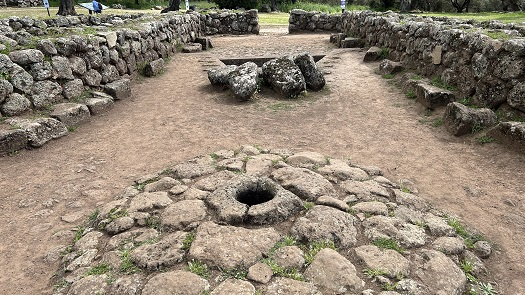
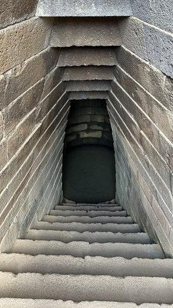
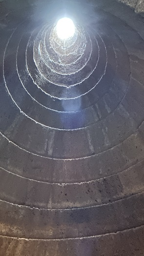
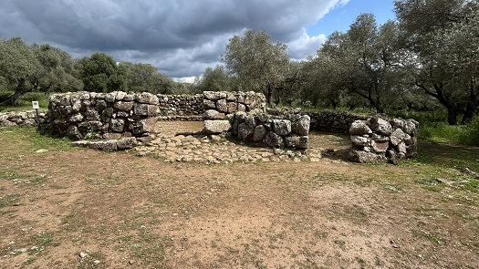
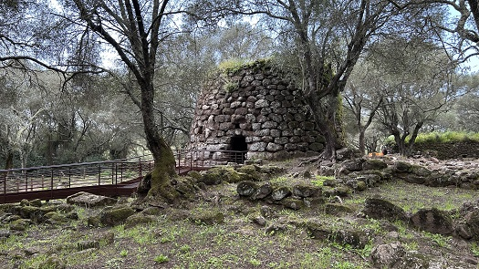

|
Santuario de Santa Cristina
El templo nurágico más representativo, mejor conservado y misterioso de
Cerdeña.
Esta ubicado en la localidad de Paulilatino.
El monumento está orientado de norte-noroeste a sur-sureste y se compone
de tres partes: vestíbulo o atrio, escalera y cámara hipogea tholos.
El pozo data de la edad de Bronce (siglo XII a.e.c.), abrazado por un
recinto sagrado (themenos) en forma de «cerradura». Construido con
piedras de basalto finamente elaboradas y con una técnica muy precisa.
La escalera trapezoidal está compuesta por 25 escalones de basalto,
dispuestos en filas de sillares isodómicos, que descienden a una
profundidad de 6,5m.
La cámara de tholos o falsa cúpula, de unos 2,5 metros de ancho, conecta
con la forma trapezoidal del hueco de la escalera y está compuesta por
sillares formando círculos concéntricos; este último se estrecha a
medida que se avanza hacia la parte superior de la cámara, que termina
con una luz circular de 35cm y tiene una altura de 7m.
Actualmente el agua tiene un nivel constante de 50 centímetros,
consecuencia de la construcción de un canal de drenaje construido
durante la campaña de excavación.
Un templo dedicado a las Aguas, al
que también se rindió culto en época fenicia, en época púnica fue
consagrado a Demetrea y Core, y en época romana a Cerere.
En los equinoccios, el sol ilumina perfectamente el fondo del pozo a
través de la escalera. También predice los eclipses lunares y cada 18,61
años la luna se refleja en la superficie del agua en el fondo del pozo.
|
 |
 |
| |
|
|
 |
 |
| |
|
Junto al pozo está la «cabaña de las
reuniones», redonda y de 10m de diámetro.

A 200m
por un sendero, encontramos la aldea nurágica, el segundo núcleo que
incluye el nuraghe Santa Cristina, mucho más antiguo que el pozo sacro,
que se remonta a la etapa media de la edad de Bronce (XV a.e.c.). Es una
torre circular con una altura, actualmente, de 6m y un ancho de 13m.
También podemos visitar la aldea cristiana.

Más info:
Pozo Sagrado de
Santa Cristina
|